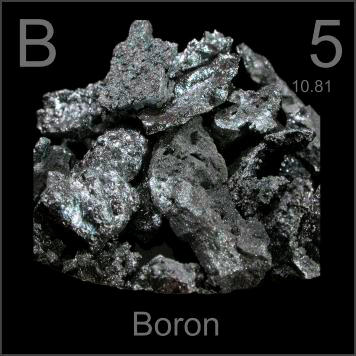

HOME
PREVIOUS
NEXT

Boron
Atomic Weight: 10.81
Density: 2.46 g/cm3
Melting Point: 2075 °C
Boiling Point: 4000 °C
Boron is found in the common mineral borax, but is rarely seen in pure form, as in these polycrystalline lumps. While extremely hard, boron is too brittle in pure form to have any practical applications.